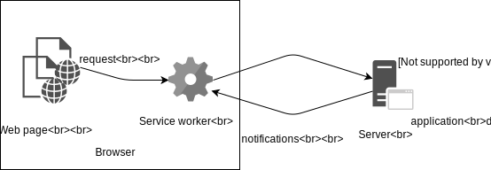
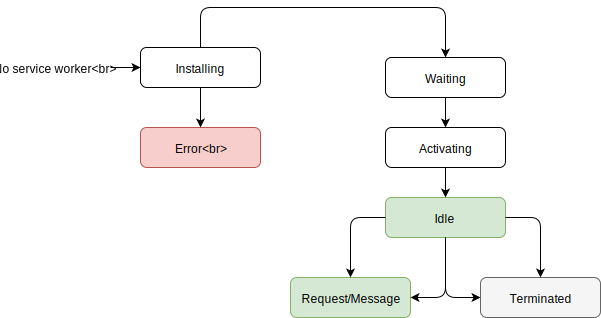
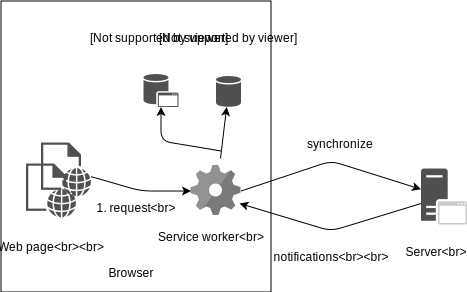

Andriy Mykulyak
"Offline-first applications"
2018-10-10
Plan
- What is offline-first application ?
- Offline-first architecture
- Static asset caching
- What is with application data ?
- Adapting UI to offline
- Collaborative applications
- Other stuff
What is offline-first application ?
An application that remains functional even without network connection.
Also usable in cases:
- very slow connections
- server overloads
- downtimes
Offline - basic
- loads even when offline
- tracks/shows connection status
- when offline, blocking screen is displayed
- restores normal operation when online
Offline - readable
- all from basic
- when offline, interface is still browsable
- when offline, data modifications are blocked
Offline - first
- all from basic and readable
- when offline, data modifications are allowed
- when online, synchronizes in the background with the server
Offline - omg
- allows collaborative work, even when offline
- real-time
- operates on large amounts of data (1 Gb or more)
Offline architecture
Write applications as if there were no network connection at all.
Consider communication with server as a side effect.
Why not native apps ?
- single code base
- faster deployment and upgrades
- a way higher visibility to customers
Offline challenges
- What serves our application ?
- How to manage (store, version, upgrade) application assets ?
- Where to store application data ?
- How to reliably synchronize with the server ?
Service workers to the rescue !
- It is a separate script that sits between Web page and network
- It can intercept requests from page to servers
- It can receive notifications from servers
- It can communicate with Web pages via
postMessage()
- It can access cached HTTP content for this page
Architecture - how SW works

Architecture - service worker lifecycle

Service worker registration
if ('serviceWorker' in navigator) {
window.addEventListener('load', () => {
// service worker will control
// everything under /scope path
navigator.serviceWorker.register('/scope/sw.js');
});
}
Service worker lifecycle events
self.addEventListener('install', (event) => {
// we'll install soon
});
self.addEventListener('activate', (event) => {
// no other service workers are present
// we'll control our pages soon :)
});
Architecture - offline-first application

Asset caching
- Cache API is the foundation
- works offline
- can use HTTP Cache
- very low-level (
add(), match(), put(), delete()
- no versioning, expiration, etc.
- is a nice wrapper
- high-level interface above Cache API
- request routing and caching strategies
- adds versioning and time-based expiration functionality
- Webpack plugins for service worker generation
Workbox setup - easy way
import workboxPlugin from 'workbox-webpack-plugin';
export default {
plugins: [
new workboxPlugin.GenerateSW(options),
],
};
Workbox setup - customizable
import workbox from 'workbox-webpack-plugin';
export default {
plugins: [
new workbox.InjectManifest({
swSrc: '/scope/service-worker.js'
})
]
}
Caching strategies
- precaching - download and cache an asset before service worker installs
- cache, fallback to network - for rarely modified assets
- stale-while-revalidate - use cache, fetch from network, update cache
Precaching - Cache API
self.addEventListener('install', event => {
event.waitUntil(
caches.open('cache-name').then(cache => {
cache.addAll([ ... ]); // non-required deps
return cache.addAll([ ... ]); // required deps
})
)
});
Precaching with Workbox
importScripts('https://storage.googleapis.com/workbox-cdn/releases/3.6.2/workbox-sw.js');
importScripts('/scope/service-worker.js');
workbox.precaching.precacheAndRoute(
self.__precacheManifest || []
);
Cache, fallback to network - Cache API
self.addEventListener('fetch', (event) => {
event.respondWith(
caches.match(event.request).then((response) => {
return response || global.fetch(event.request);
})
);
});
Cache, fallback to network - Workbox
workbox.routing.registerRoute(
/\/avatars/.*\.(?:png|jpg|jpeg|svg|gif)/,
workbox.strategies.cacheFirst({
plugins: [
new workbox.expiration.Plugin({
maxEntries: 20,
maxAgeSeconds: 7 * 24 * 60 * 60,
})
],
})
);
Where to store application data ?
- localStorage
- IndexedDB
- PouchDB (with CouchDB)
- Firebase
Using IndexedDB
- object database
- multiple stores, indexes
- event-based
- not the easiest interface
Application data - framework support
- redux-offline
- redux-persist
Application data - reading
Application data - writing
- Background synchronization
Adapting UI to offline
- Displaying connection status
- Optimistic updates
- Displaying update info for app objects
- Resolving conflicts
Collaborative work
- conflict resolution
- MVCC
- ETag
- Operational Transform
Conflict resolution strategies
- ShareDB
- TurtleDB / TortoiseDB
Other (interesting) stuff
- Security of offline applications
- Authorization data
- transactional applications
See you next month at WarsawJS